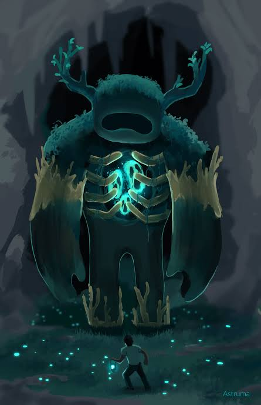
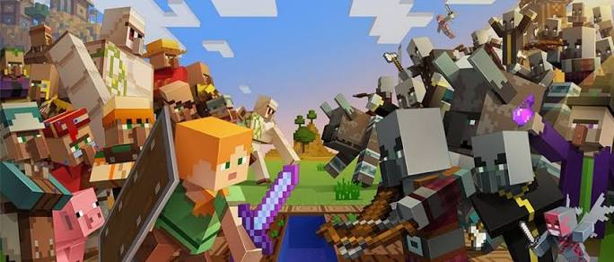

Dia 13 de maio de 2009 um jogo chamado "Cave Game" hoje em dia chamado de Minecraft foi criado por Markus Alexej Persson mas conhecido como "notch" ele foi o responsavel pela criação e fundar a empresa Mojang.

O Minecraft é um jogo sandbox, significa que são títulos de mundo aberto que oferecem liberdade total de movimento, criação e exploração, sem objetivos fixos ou caminhos obrigatórios. Diversas dimensões e bosses para derrotar como o Warden, Whiter boss e o chefão final Ender Dragon
O Minecraft possui mas de 20 estruturas todas distribuidas pelo mundo todo em todas as dimensões sendo algumas essenciais para que o jogo possa ser zerado como Fortaleza do Nether e a Fortaleza (Stronghold) e quase todas as outras para exploração do mundo, tanto explorando os os oceanos procurando mapas para um tesouro enterrado ou até comercializar com os adeões explorando as vilas protejendo-as das invasões pillagers.
